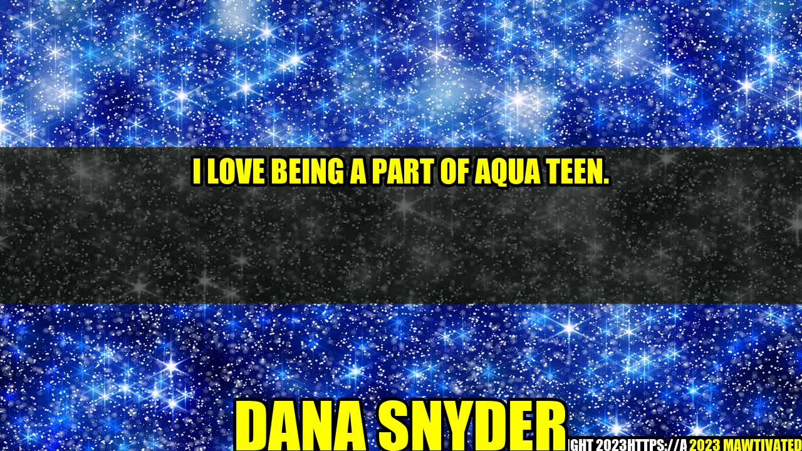

I Love Being a Part of Aqua Teen - Dana Snyder's Story

In the world of television and animation, few shows have achieved the cult status and enduring popularity of Aqua Teen Hunger Force. As a voice actor on the show, I have had the privilege of being a part of this incredible phenomenon since its inception. I have seen firsthand how the show has impacted viewers around the world and I am honored to be a part of its legacy.
My Background
Before I became a voice actor on Aqua Teen, I was a struggling actor looking for my big break. I had worked on a few small projects here and there, but nothing had really taken off. Then, I landed the role of Master Shake on Aqua Teen and my life changed forever.
"Aqua Teen Hunger Force was unlike anything else on television at the time. It was weird, irreverent, and absurd. And I loved it."
Why I Love Being a Part of Aqua Teen
There are many reasons why I love being a part of Aqua Teen. Here are just a few:
- The Writing - The writing on Aqua Teen is truly phenomenal. The show's creators - Dave Willis and Matt Maiellaro - have a unique and twisted sense of humor that I have always admired. Every script is filled with hilarious jokes, clever references, and unexpected twists that keep viewers on their toes.
- The Fans - The fans of Aqua Teen are some of the most dedicated and passionate fans I have ever encountered. They love the show and have shown their support time and time again. Their enthusiasm and loyalty is truly inspiring.
- The Legacy - Aqua Teen Hunger Force has become a cultural icon. It has influenced countless other shows, movies, and even music. Being a part of something that has had such a profound impact on popular culture is an incredible feeling.
Examples of Aqua Teen's Impact
As I mentioned earlier, Aqua Teen Hunger Force has had a huge impact on popular culture. Here are just a few examples:
- The Show Has Inspired Countless Memes - From Frylock's menacing stare to Meatwad's adorable innocence, the characters on Aqua Teen have become meme-worthy icons that have been plastered all over the internet.
- The Show Has Spawned a Movie - In 2007, Aqua Teen Hunger Force Colon Movie Film for Theaters was released. While it wasn't a blockbuster hit, it was a testament to the show's popularity and enduring appeal.
- The Show Has Been Parodied - The Simpsons, South Park, and many other popular shows have paid homage to Aqua Teen in their own unique ways. The show's influence can be felt in countless other shows and movies.
Conclusion
In conclusion, being a part of Aqua Teen Hunger Force has been an incredible experience. The writing is top-notch, the fans are amazing, and the show's impact on popular culture is undeniable. I feel incredibly lucky to be a part of this phenomenon and I look forward to seeing what the future holds.
- The Writing - The writing on Aqua Teen is top-notch, filled with hilarious jokes and unexpected twists.
- The Fans - The fans of Aqua Teen are passionate and dedicated, showing their support time and time again.
- The Legacy - Aqua Teen Hunger Force has become a cultural icon, influencing countless other shows, movies, and even music.
Hashtags: #AquaTeenHungerForce #DanaSnyder #VoiceActor #CartoonNetwork #Television #Animation
Article Category: Entertainment
Curated by Team Akash.Mittal.Blog
Curated by Team Akash.Mittal.Blog
Share on Twitter Share on LinkedIn